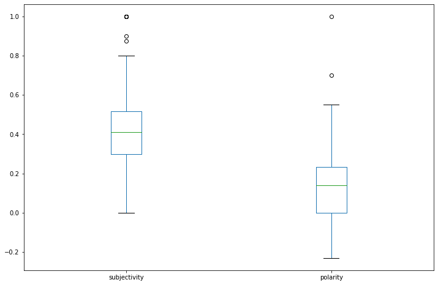

Sentiment Analysis using Textblob (NLP for beginners)
Text Analytics
Text analytics provides a powerful way to derive meaning from textual data. It can be used for a number of different things such as sentiment analysis, topic detection, and predictive analysis. The most common way that text analytics is used is to extract information about the topic and sentiment of any given piece of text. This allows companies to examine how their customers feel about their company or products. Text analytics has been around for a number of years now, however it has exploded in popularity thanks to recent advancements in machine learning algorithms and the availability of affordable cloud computing.
Workflow
- Load & Clean data
- Install TextBlob (Optional)
- Perform sentiment analysis
1. Load & Clean data
import pandas as pd
import re
# Could use text cleaner (lighweigtht) or nltk and remove stopwords etc..
def clean_text(text):
# Comment out any line for textual elements you want to keep
text = re.sub('<[^<]+?>', '', text) # strip html
text = re.sub('\\xa0','', text) # remove some rogue code from posts
text = re.sub(r'[^\w\s]','',text) # remove puncuation
text = re.sub(r'\d+', '', text) # remove numbers
text = " ".join(text.split()) # remove extra whitespace
text = text.lower() # to lowercase
return text
# Load the data
df = pd.read_csv('posts.csv')
print("Before Cleaning")
display(df.head())
# Clean the data
df.post = df.post.apply(clean_text)
print("After Cleaning")
df.head()
Before Cleaning
| post | |
|---|---|
| 0 | <p>Are there any key differences in the procur... |
| 1 | <p>The concept of procurement is considerably ... |
| 2 | <p>What are the roles and responsibilities of ... |
| 3 | <p>The Chief Procurement Officer is head of th... |
| 4 | <p>How does governance play part in the ICT pr... |
After Cleaning
| post | |
|---|---|
| 0 | are there any key differences in the procureme... |
| 1 | the concept of procurement is considerably sim... |
| 2 | what are the roles and responsibilities of a c... |
| 3 | the chief procurement officer is head of the p... |
| 4 | how does governance play part in the ict procu... |
2. Install TextBlob (Optional)
If not installed, uncomment preferred method below. See https://jakevdp.github.io/blog/2017/12/05/installing-python-packages-from-jupyter/ for why using sys method
# Install a conda package in the current Jupyter kernel
#import sys
#!conda install --yes --prefix {sys.prefix} textblob
# Install a pip package in the current Jupyter kernel
#import sys
#!{sys.executable} -m pip install textblob
3. Perform Sentiment Analysis
The sentiment function of textblob returns two properties, polarity, and subjectivity.
Polarity
Polarity is float which lies in the range of [-1,1] where 1 means positive statement and -1 means a negative statement.
Subjectivity
Subjective sentences generally refer to personal opinion, emotion or judgment whereas objective refers to factual information. Subjectivity is also a float which lies in the range of [0,1].
from textblob import TextBlob
# Wrapper so can use Pandas apply() function on a column
def getSubjectivity(text):
return TextBlob(text).sentiment.subjectivity
def getPolarity(text):
return TextBlob(text).sentiment.polarity
# Could use lambda function and not need wrappers above, but I think the wrapper
# method is more readable and matches the applicaiton of the clean_text() function above
# df['subjectivity'] = df.post.apply(lambda x: TextBlob(x).sentiment.subjectivity)
# Calculate sentiment,
df['subjectivity'] = df.post.apply(getSubjectivity)
df['polarity'] = df.post.apply(getPolarity)
df.head()
| post | subjectivity | polarity | |
|---|---|---|---|
| 0 | are there any key differences in the procureme... | 0.800000 | 0.000000 |
| 1 | the concept of procurement is considerably sim... | 0.358333 | 0.163542 |
| 2 | what are the roles and responsibilities of a c... | 0.000000 | 0.000000 |
| 3 | the chief procurement officer is head of the p... | 0.587963 | 0.377778 |
| 4 | how does governance play part in the ict procu... | 0.000000 | 0.000000 |
df.boxplot(column=['subjectivity','polarity'], grid=False, figsize=(12,8))
<AxesSubplot:>
